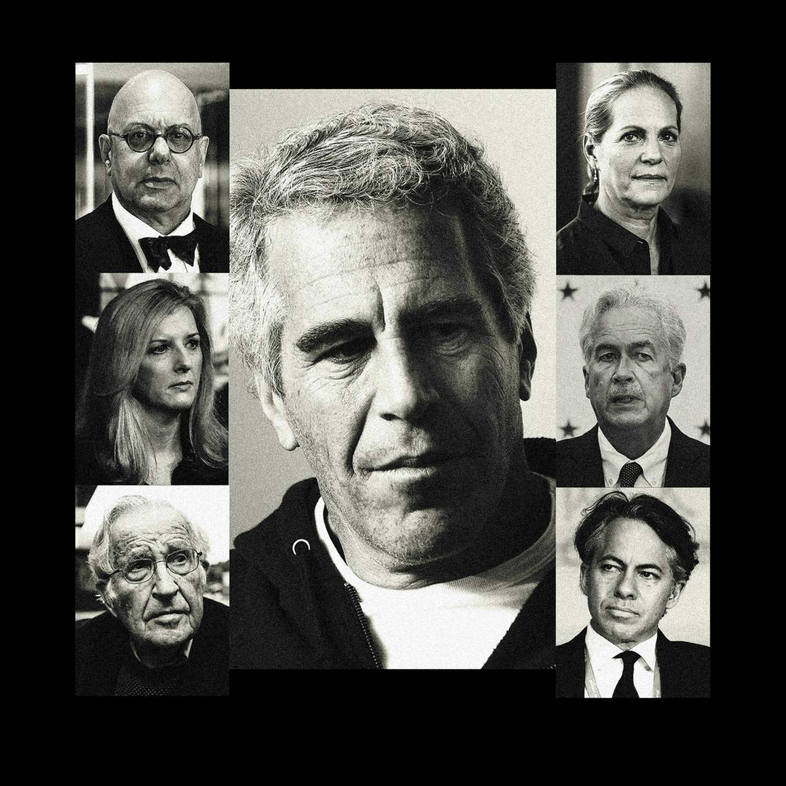
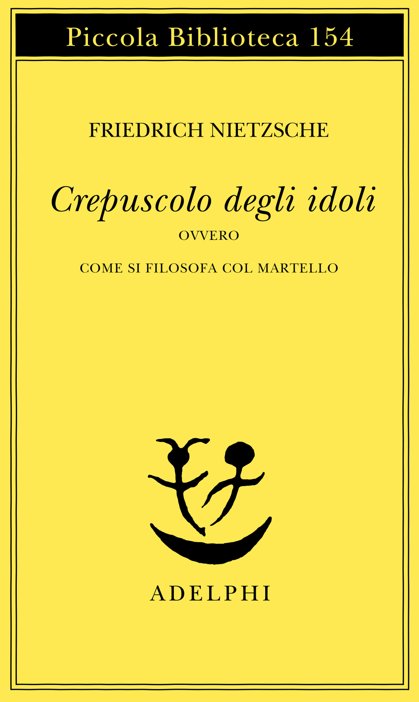
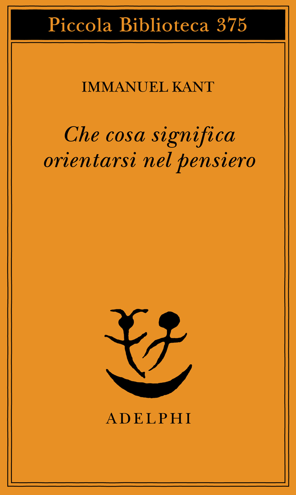
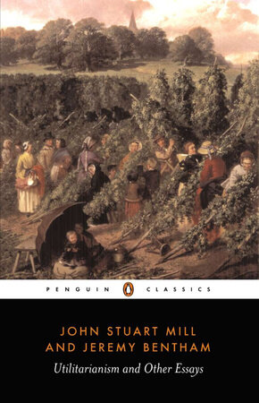

42:36 · 8 OPERE
Le "élite" in visita da Jeffrey Epstein.
Il filo del discorso
Un’inchiesta sui calendari privati di Jeffrey Epstein offre al relatore l’occasione per interrogare la responsabilità delle persone considerate autorevoli. Dalla frequentazione di un uomo già condannato passa al rapporto fra prestigio, giudizio morale e giustificazioni pubbliche, soffermandosi su William Burns, Noam Chomsky e altri nomi citati dal giornale. La discussione attraversa Platone, Nietzsche, Kant, Fukuyama, Mill e una poesia di Robert Frost: il filo comune è la possibilità di scegliere una condotta ragionata anche quando convenienza e riconoscimento sociale spingono altrove. Nella seconda parte il relatore collega la crisi del giudizio a comunicazione, impiego politico delle conoscenze psicologiche e controllo sociale. La scheda mantiene attribuite le sue accuse e le sue interpretazioni, distingue appuntamenti e responsabilità penali e segnala riscontri storici o scientifici che correggono alcuni passaggi. Il finale propone di ricostruire luoghi di discussione orientati a pace e giustizia.
I libri nel discorso

Epstein’s Private Calendar Reveals Prominent Names, Including CIA Chief, Goldman’s Top Lawyer
Illustrazione dell’articolo: Wall Street Journal, 30 aprile 2023. Illustrazione fotografica originale a corredo dell’articolo, non copertina libraria.
Montaggio fotografico autentico dell’inchiesta, con Epstein al centro e sei ritratti laterali. Non documenta persone riunite nello stesso luogo o coinvolte nello stesso reato.
Wall Street Journal e inchiesta sui calendari di Epstein del 30 aprile 2023 espliciti; titolo e firme riscontrati nella pagina originale.
Passaggio 0:00 ↗ · Fonti e libro ↗
Crepuscolo degli idoli, ovvero Come si filosofa col martello
Identificazione probabile
Copertina: Adelphi, Piccola Biblioteca Adelphi 154, 1983, traduzione di Ferruccio Masini, 184 pagine. Copertina dell’edizione di riferimento, non certificata come esemplare mostrato.
Immagine autentica dell’opera, controllata visivamente; l’edizione di riferimento non è attribuita al filmato.
Nietzsche e il mondo divenuto favola; probabile sezione Come il mondo vero finì per diventare favola, titolo del volume non letto.
Passaggio 2:24 ↗ · Fonti e libro ↗
Gli strumenti del comunicare (Understanding Media)
Identificazione probabile
Copertina: Il Saggiatore, 2023, traduzione di Ettore Capriolo; opera originale del 1964.
Immagine autentica dell’opera, controllata visivamente; l’edizione di riferimento non è attribuita al filmato.
McLuhan e il mezzo come messaggio; probabile riferimento al libro già censito, senza titolo o edizione letti.
Passaggio 2:34 ↗ · Fonti e libro ↗
La Repubblica
Identificazione probabile
Copertina: Laterza · La Repubblica · edizione con testo a fronte di riferimento
Immagine associata all’ISBN di riferimento e controllata visivamente; edizione e traduzione non identificate come quelle citate o lette nel video.
Platone e i filosofi al governo, poi le vite orientate a sapienza, onore e guadagno; probabili Repubblica V e IX, senza libro e passi pronunciati per esteso.
Passaggio 5:25 ↗ · Fonti e libro ↗
Che cosa significa orientarsi nel pensiero
Copertina: Adelphi, Piccola Biblioteca 375, 1996
Copertina dell’edizione autonoma del saggio, tradotta da Petra Dal Santo e curata da Franco Volpi. Edizione scelta come riferimento iconografico; nessuna edizione è confermata nel video. L’identificazione dell’opera nel video resta probabile.
Kant e il problema di orientarsi nel pensiero; titolo riconoscibile senza edizione specifica.
Passaggio 11:39 ↗ · Fonti e libro ↗
The End of History and the Last Man (La fine della storia e l’ultimo uomo)
Identificazione probabile
Copertina: Free Press, 1 marzo 2006, 464 pagine, con nuovo poscritto. Prima edizione del libro 1992, distinta dall’articolo The End of History? del 1989.
Immagine autentica dell’opera, controllata visivamente; l’edizione di riferimento non è attribuita al filmato.
Fukuyama, articolo e successivo volume sulla fine della storia; titolo completo del libro identificato bibliograficamente.
Passaggio 12:18 ↗ · Fonti e libro ↗
Utilitarianism (Utilitarismo)
Identificazione probabile
Copertina della raccolta: Opera di Mill apparsa nel 1861 e in volume nel 1863. Immagine della raccolta Penguin Classics Utilitarianism and Other Essays, 4 agosto 1987, 352 pagine, a cura di Alan Ryan, comprendente testi di Mill e Jeremy Bentham.
Copertina autentica della raccolta Utilitarianism and Other Essays. Bentham è presente nella raccolta, ma non è coautore del saggio Utilitarianism di Mill. Edizione non identificata nel video.
Parafrasi che combina i confronti umano/maiale e Socrate/stolto del capitolo II; autore e titolo non espliciti.
Passaggio 16:19 ↗ · Fonti e libro ↗
The Road Not Taken
Identificazione probabile
Copertina della raccolta: Poesia del 1915, raccolta in Mountain Interval nel 1916. Copertina della raccolta Dover The Road Not Taken and Other Poems, 1993, 64 pagine.
Copertina autentica della raccolta Dover, non fascicolo autonomo della singola poesia o edizione vista nel video.
Robert Frost e il verso conclusivo made all the difference; titolo della poesia identificato, non pronunciato.
Passaggio 18:21 ↗ · Fonti e libro ↗